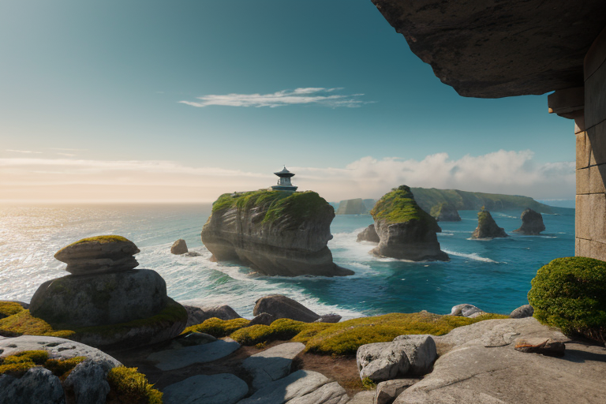
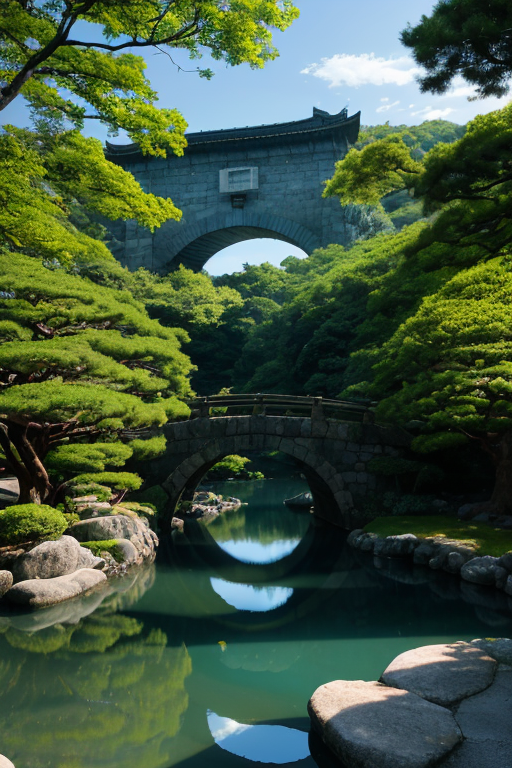
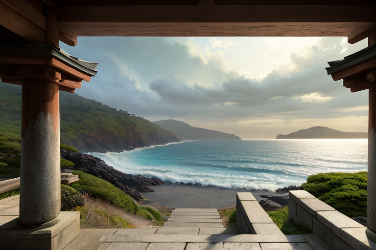
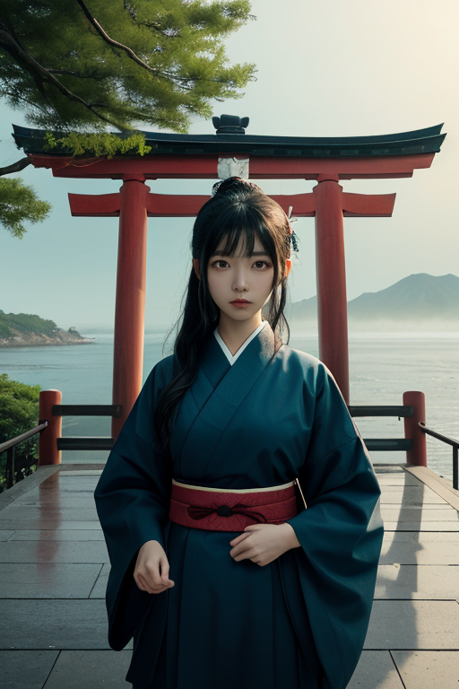

第一章 現実の山口
あなたはまだ気づいていない。この土地にも、王がいることを。
元乃隅神社の鳥居は、断崖の上に連なり、荒波を睥睨している。青い海と白い波しぶき。参拝客のざわめきも、ここでは潮風に溶け、深い静寂に飲み込まれる。賽銭箱は高い岩棚に据えられ、人々は願いを込めた硬貨を、一心に投げ入れる。当たるか外れるか。それは、ささやかな偶然の調整だ。
この静寂の底で、地殻はゆっくりと歪みを蓄えている。日本列島という巨大な器の、西の縁。ここは静律線、最も精神性が高く、祈りが地層に染み込む世界線である。
王は、鳥居の一本の影に立っていた。潮流と変革の王、ヤマグチア・リバース。その目は、海の彼方と地の底とを同時に見据える。彼の役目は、流れを変えることではない。流れが破壊へと暴走する寸前、その速度をほんの少し緩め、方向を微かに調整することだ。次の歪みの波が来る。いつも通り、人々は気づかぬうちにやり過ごすだろう。王は、賽銭が箱に収まるかどうかよりも、もっと確かな「調整」を静かに行う。

第二章 歪みの兆候
錦帯橋の五連のアーチが、岩国川の水面に静かな曲線を描く。観光客の笑い声が流れる中、王は橋桁の陰に立っていた。彼の感覚は、この土地に蓄積された「祈り」の微かな歪みを捉えている。松下村塾で志士たちが抱いた変革への祈り。元乃隅神社の鳥居をくぐる漁師たちの安全への祈り。それらが、地底のプレートに伝わる巨大な「力」と、どこかで不協和音を起こし始めていた。
「揺れが来ます」
主席妖精リヴァナが、潮流の変調を告げる。その声は、風のざわめきのようだ。
「規模は…想定より大きい。歴史転換波、補正限界に近づいています」
王は目を閉じた。彼の内側で、藍と白の紋章が微かに輝く。流れを変える勇気はあるか？ 問いは、彼自身へのものだった。彼に許されたのは、破局への流れを、ほんの一瞬、ほんの少しだけ堰き止めること。その一瞬の隙間に、人々が自らの足で逃げる「選択」を生み出すことだ。瓦そばの湯気が立ち昇る町並み、夏みかんの甘い香り。彼は、この日常を流れ去らせはしない。

第三章 王の葛藤
角島大橋を渡る風は、いつもより冷たく感じた。潮流王ヤマグチア・リバースは、橋のたもとに立ち、内なる海と対峙していた。補正限界。それは、彼がこの地に遣わされた時から知っていた絶対的な壁だ。彼は破壊者ではない。調整者に過ぎない。それなのに、なぜこの胸の内には、抗おうとする熱のようなものが渦巻くのか。
元乃隅神社の123段の階段を、白い波が洗う。あの場所は、願いが積み重ねられる静寂の場だ。彼にも願いがあった。この地を、ただ守りたい。萩焼の器のように、長い時間をかけて育まれた形を、壊さずに済ませたい。しかし、歴史は時に、器を砕くことでしか新たな形を生まない。吉田松陰が松下村塾で教えたように。彼はその矛盾のただ中に立っていた。
大胆な変革を旨とする彼の本質と、調整者としての抑制。この二つの潮流が、彼の内側で激しくぶつかり合う。藍と白の紋章が軋む。流れを変える勇気は、自分自身を変える勇気でもあるのだと、彼は静かに理解し始めていた。
第四章 妖精との対話
元乃隅神社の百二十三基の鳥居は、断崖から紺碧の海へと連なり、朱の弧を描く。その下、潮流のぶつかり合う海峡の底で、王は座していた。主席妖精リヴァナが、その傍らに現れた。彼女の声は、水脈を伝う微かな振動のようだった。
「あなたは、『変える』ことばかりを考えていますね」
王は目を閉じた。リヴァナは続ける。
「私たちが補正する歴史の波も、地殻の歪みも、全ては『流れ』です。変革とは、流れの向きをほんの少し、別の可能性へと導くこと。決して、流れそのものを止めることではありません」
彼女は、萩焼の器に注がれた水の表面を、指先でそっと撫でた。円形の波紋が広がり、器の縁で消える。
「祈りとは、この波紋のようなもの。願いそのものが事態を変えるのではなく、願う者の魂を整え、次の一歩を踏み出すための静寂を与える。あなたが感じる矛盾、それは流れの一部。否定するのでも、押し流されるのでもなく、ただその中で、己の在り方を探せばいい」
王は、器の中の水が、ゆっくりと静止するのを見つめた。

第五章 微調整と余韻
角島大橋を渡る風は、いつもより穏やかだった。潮流王は橋の中央に立ち、目を閉じる。彼の内側では、王国の全妖精たちの精神波が、静かな調和を保っていた。リヴァナの歴史転換波、チョウリュウナの変革波。それらは今、巨大な歪みの予兆を前に、最も抑制された微調整を行っている。揺れを一段階緩め、津波の先端を数秒遅らせる。それだけだ。救える命と、救えない運命の境界は、常に曖昧で残酷だ。
彼は感情を持たないはずだった。しかし、維新の志士たちの覚悟の残響や、この海峡で散った無名の兵士たちの無念が、長い年月をかけて彼の内側に沈殿していた。それは革命性という情熱ではなく、静かな諦観に近いものだった。全てを変えることはできない。ただ、流れの中で、ほんの少しの「間」を作ること。その「間」が、誰かの選択を、一つの命を、変えるかもしれない。
風が止んだ。調整は終わった。彼は藍と白の紋章を胸に刻み、日常の中へと溶けていく。元乃隅神社の鳥居をくぐる参拝客の一人に、瓦そばを啜る老人の隣に。見えない守り手は、また静寂の中へと還る。
あなたの町にも、王がいる。